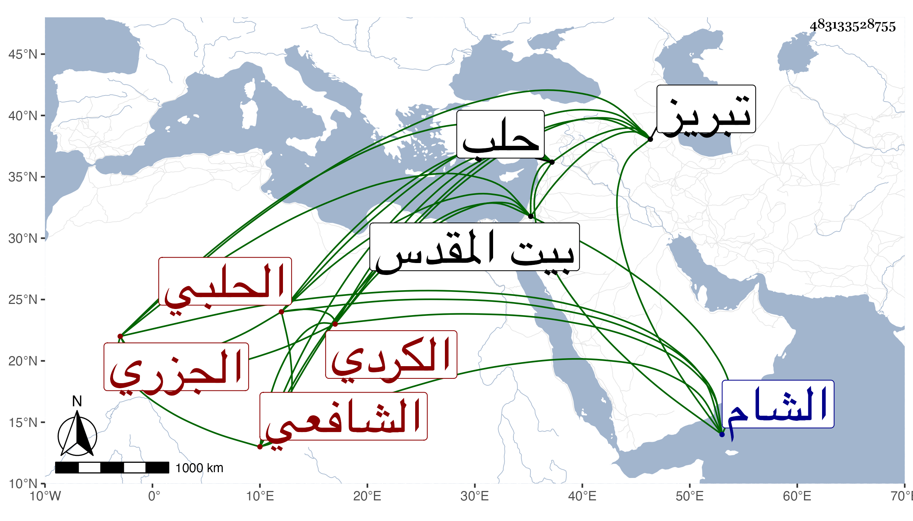

0902Sakhawi.DawLamic.ITO20230111-ara1.EIS1600.483133528755
Biography ID: 483133528755
460
عثمان بن سليمان بن إبراهيم بن سليمان بن خليل الجزري ثم الحلبي الشافعي ويقال له عثمان الكردي . ولد تقريبا سنة تسع وعشرين وثمانمائة باورمة من أعمال تبريز وتحول منها قبل بلوغه لجزيرة ابن عثمان فحفظ بها القرآن وجوده على عمر ابن يوسف المارونسي وعنه أخذ في الفقه والعربية والمنطق وكذا حفظ الإيجاز مختصر المحرر بل ونصف المحرر ومن الحاوي إلى الوصية وجميع المنهاج الأصلي والحاجبية والمراح والمغني للفخر الجاربردي وغيرها وأقام بها سبع سنين وسافر منها إلى البلاد الشامية فأخذ بحلب عن عبد الرزاق الشرواني المنهاج الأصلي وقرأ على الشهاب المرعشي صحيح البخاري ومسلم والمصابيح وعلى غيرهما في الفلسفة والحكمة وغيرهما وبالشام عن البلاطنسي في الفقه وجميع منهاج العابدين للغزالي بل والربع الأول من الأحياء والمنجيات منه وعن يوسف الرومي المعاني والبيان والجاربردي ولقي بها حسين الوسطاني فقرأ عليه شرح العقائد والمطول وغيرهما في آخرين بها وبغيرها بل لقي في صغره ببيت المقدس الشهاب بن رسلان فلازمه دون أربعة أشهر بالختنية وقرأ عليه أربعي الطائي وقليلا من الصرف ورام قراءة شيء كان معه فأعلمه بأنه موضوع وحضر دروسه وعادت عليه بركته ، وحج غير مرة وجاور في سنة ثلاث وثمانين ثم في سنة ثلاث وتسعين ولقيته حينئذ وكان يكثر الطواف والاعتمار والعبادة وربما أقرأ بل أقرأ في الأولى الأصول وغيره وقال لي بعض الطلبة أنه قرأ عليه في الكشاف وهو إنسان خير سليم الفطرة نير الشيبة تكررت مساءلته لي عن أشياء من الحديث وغيره بل استجازني لنفسه ولولده وعاد لبلده . مات فجأة في رجب سنة ثمان وتسعين وخلف أولادا ليس فيهم من خلفه .
